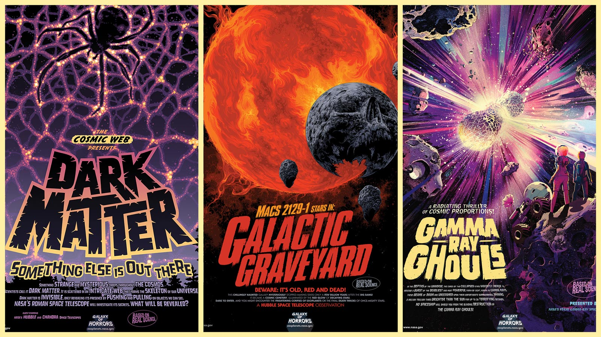
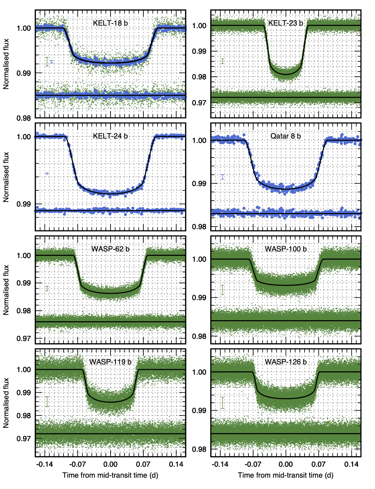
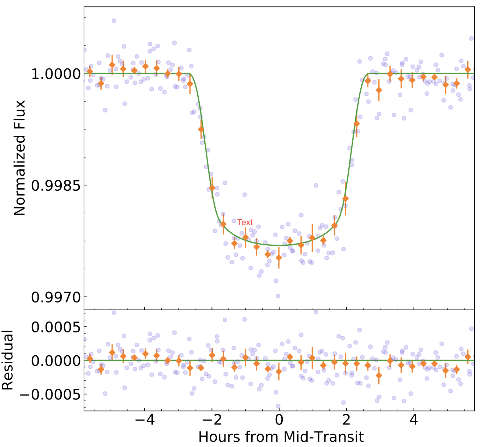

STATUS UPDATE: The Cycle 4 solicitation is now available on NSPIRES. The Phase-1 deadline is January 22nd 2021
Welcome TESS followers to a special Halloween edition of the TESS news bulletin! This week we have three papers from the archive in addition to a new spooky feature!.
With Halloween this week NASA has released its latest Galaxy of Horrors posters. The new posters feature a galaxy that has stopped producing stars and become a cosmic graveyard, an explosive gamma-ray burst caused when the cores of two dead stars collied and merge, and a dark matter poster. These posters were produced by NASA's Exoplanet Explorer Program office at JPL, and are free to download here, so spook up your homes this weekend with some mysterious astronomical phenomena!
Now onto our featured papers for the week,
Search for planets in hot Jupiter systems with multi-sector TESS photometry. I. No companions in planetary systems KELT-18, KELT-23, KELT-24, Qatar-8, WASP-62, WASP-100, WASP-119, and WASP-126 (Maciejewski et. al., 2020):
Giant planets in close orbits to their host stars are often referred to as hot Jupiters. There are many questions regarding the formation of these planets. In this paper the authors have used multi-sector photometry from TESS to search for additional planes in the KELT-18, KELT-23, KELT-24, Qatar-8, WASP-62, WASP-100, WASP-119, and WASP-126 planetary systems. Planets are hunted for using both the transit technique and transit timing method.
In the KELT-23 and WASP-62 systems planets down to terrestrial-size have been eliminated. In the remaining systems planets down to mini-Neptunes or Neptunes have been eliminated.
Using the transit timing analysis no sign of long-term trends or periodic perturbations have been found for all studied hot Jupiters.
The suggested isolation of these hot Jupiters indicates that a highly-eccentric migration mechanism was probably responsible for bringing them into their tight observed orbits.
TOI-954 b and EPIC 246193072 b: Short-Period Saturn-Mass Planets that Test Whether Irradiation Leads to Inflation (Sha et. al., 2020):
In this paper the authors present the discovery of two short period Saturn mass planets. The first transits TOI-954, a G sub-giant with a V-band mag of 10.34, observed in TESS Sectors 4 and 5. The second planet transits a G dwarf called EPIC 246193072, which has a V-band magnitude of 12.70 and was observed in K2 campaigns 12 and 19.
Using ground-based and archival follow-up observations the authors have characterized these two planets. TOI-954 b has a radius of 0.852 RJ, a mass of 0.174 MJ, and an orbital period of 3.68 days. EPIC 246193072 b has a radius of 0.774 RJ, a mass of 0.260 MJ, and has an orbital period of 12.46 days.
As TOI-954 b is 30 times more irradiated than EPIC 246193072 b, but is of a similar size, it allows the community an opportunity to test whether irradiation leads to inflation of Saturn-mass planets. These two systems allow the comparison of Saturn-mass planets at different stages of their lives.
Exploring Trans-Neptunian Space with TESS: A Targeted Shift-Stacking Search for Planet Nine and Distant TNOs in the Galactic Plane (Rice et. al., 2020):
The authors of this paper have created a new pipeline that is designed to search faint data for undiscovered solar system bodies using TESS full frame images. The baseline flux of each pixel is removed before the alignment and co-adding of all frames along plausible orbital paths.
The code has been tested by the authors on three trans-neptune objects: 90377 Sedna (V=20.64), 2015 BP519 (V=21.81), and 2007 TG422 (V=22.32), with signals recovered.
The authors then went on to do a blind search of sectors 18 and 19 to further test their pipeline. They searched for dim objects at geocentric distances of 70−800 au in a targeted search for Planet Nine, and any previously unknown detached Kuiper belt objects that may shed light on the Planet Nine hypothesis. They found that they were able to recover the signals of distant solar system bodies in the galactic plane with a V-band magnitude brighter than 21st, and at distances less than 150 au.

Fig 1. The new Galaxy of Horrors posters created by NASA/JPL-Caltech. The three posters focus on real cosmic phenomena.

Fig 2. Taken from Maciejewski et. al., 2020. TESS phase folded light curves with the best fitting models applied. Short cadence data is green with long cadence being blue. Residuals are plotted below each light curve. Typical median error bars are shown to the left of each panel.

Fig 3. Taken from Sha et. al., (2020). TESS detrended and phase folded 30 min cadenced light curve of TOI-954. This is after dilution, and focuses on the transit with binning of 20 min.